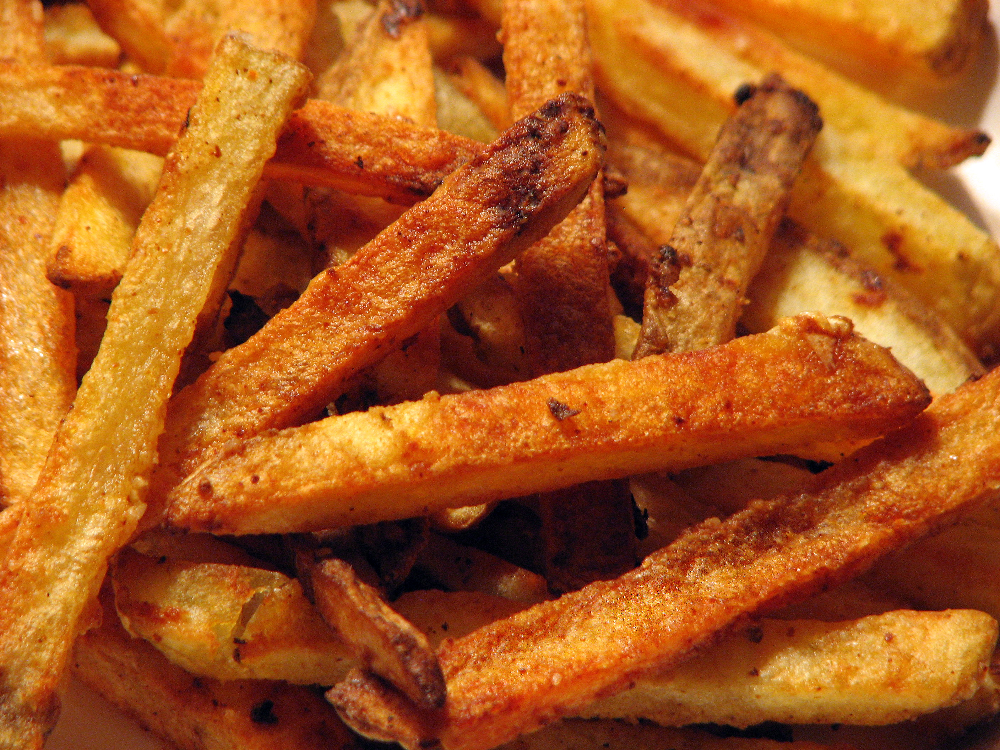

Fries

Fries are a delicious fastfood but did you know that they are also easy to make?
For this recipe you will need just some basic kitchen utensils and only two ingredients. Read on to see for yourself.
Ingredients
- As many potatoes as you would like to have fries
- 1L neutral oil for frying
- 5gr of salt
- salt to taste
Steps
- Wash and rinse your potatoes. It is optional to skin them.
- Cut your potatoes in rectangular pieces.
- Combine them with salt and let rest for 10 minutes on a dishtowel of kitchenpaper (The salt will extract excess moisture from the potatoes).
- After 10 minutes dry your potato pieces.
- Heat the oil in a pan with high walls.
- Fry the pieces in the oil until they are goldenbrown.
- Toss them in a bowl with a bit of salt.
- Enjoy!